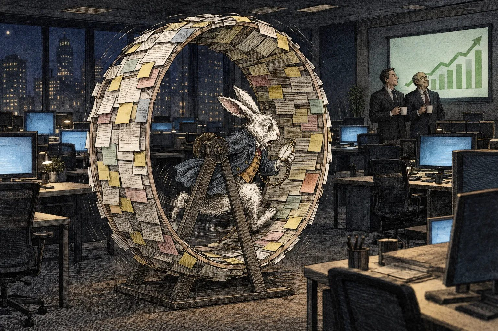

I closed 47 tickets last sprint.
Not one of them made the product better.
And I’ve never been prouder.
Let me explain. 👇
Last week a junior developer asked me a question that changed my career.
He asked: “What does this ticket actually do for the users?”
I looked at him for a long time.
That’s when I knew he’d never make it to senior.
Here’s the thing nobody tells you at university.
Software is not about building things.
It’s about moving cards from left to right.
It started with CORE-43.
“The dashboard must show sales data in real time, as specified in the project documentation, section 4.2.1.”
A simple ticket. 1 story point. The requirement was right there in the documentation. Signed off by four people. What could possibly go wrong?
So I followed it.
- Section 4.2.1 says real time. The data arrives once a night. 📊 ➡️ CORE-44
- To find out whether it could arrive more often, we needed access to a system nobody on the team has access to. ➡️ CORE-45
- Access required a request to IT. ➡️ CORE-46
- IT needs three weeks to reply to an email. Processing the actual request is a separate, much longer journey. We once waited nine months for a test user account. When it finally arrived, the project it was for had been cancelled and the account had already expired. ⏳
- While we waited, a team I had never heard of opened a ticket to ask why we opened a ticket. ➡️ CORE-47
- So we stopped waiting and made the dashboard refresh itself every five seconds. ➡️ CORE-48
Three weeks later I was reading a GitHub issue from 2016 about timezones, in which a man in Finland was also crying.
The dashboard now updates in real time. ✅
Every five seconds it proudly shows the exact same numbers from last night. Including the sales of a store that closed in March.
But the acceptance criteria said “real time”. Not “new data”.
Acceptance criteria met. 🚀
Oh, and section 4.2.1? It turned out to be wrong. It had been copy-pasted from another project’s proposal, for a different system that actually did have live data. Nobody noticed in time. All four people had signed it off. None of them had read it.
By the time anyone found out, CORE-43 was Done, demoed and in the quarterly report. Fixing the documentation now would need a ticket.
And access from IT.
Here’s what CORE-43 taught me:
💡 Acceptance criteria are a contract, not a suggestion. If the documentation is wrong, that’s a documentation problem. The ticket is green.
💡 Never close a ticket without opening two. A healthy backlog is a growing backlog. A growing backlog is job security.
💡 Velocity is the product. The customer doesn’t buy software. The customer buys our burndown chart. They just don’t know it yet.
💡 A bug fixed is a story point lost. A bug re-opened is a story point earned twice.
💡 The burndown chart is art. And art doesn’t need to mean anything.
Because here’s what management actually needs to see.
Not working software.
Movement.
To Do → In Progress → In Review → Done.
The wheel must keep turning. 🔄
As long as the wheel is turning, the dashboard is green. As long as the dashboard is green, nobody asks what the wheel is attached to.
(It is attached to nothing. It has never been attached to anything.)
Sisyphus wasn’t cursed. He was the first Scrum Master. The boulder was just well estimated.
And at some point you have to admit it.
We are not building software anymore.
We are performing the ritual of building software.
We have stand-ups where nobody stands and nothing goes up. We have retrospectives where we agree to do better, then create a ticket called “Do better”, estimate it at 3 points and move it to the next sprint. Forever. We have a Definition of Done that is longer than the product’s actual documentation, and a product nobody has opened since the demo.
Nobody is lying, exactly. Every number on every dashboard is true. The tickets really were closed. The criteria really were met. It’s just that all of those true things, added together, describe a company that doesn’t exist.
We’re not late because there’s too much work.
We’re late because being late is the work.
Last time I wrote that I can’t wait for the war against the machines, because it would finally give humanity a common goal.
I’ve changed my mind.
The machines are already here. They’re called AI agents, and they close tickets faster than any of us ever could. They open pull requests at 3 a.m., satisfy every acceptance criterion and break nothing that is written down.
The wheel finally spins itself.
Which means humans are now obsolete in the one skill we truly mastered: looking busy.
So here’s my advice to every young engineer:
Pick up the ticket. 🎫
Move the card. 🔄
Never ask what the ticket is for. 🙅
Agree? 👇
♻️ Repost if your sprint was 100% done and 0% useful.
#leadership #agile #jira #growthmindset #storypoints #velocity #humbled